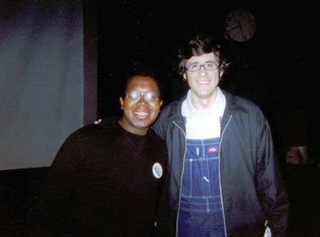

Charlie has been a friend of mine for about a year now it seems. I remember meeting him at Lambda in the spring or fall, I'm not quite sure I remember. I don't think I saw him that much though, I was all recluse when it came to Lambda. I became a much better friend to Charlie in the fall of 2002. I became a bit more brave when it came to Lambda then and talked to him much more. Charlie is actually a staple of Wednesday nights at Boneshakers. I always seem to see him there and he is such a joy to dance with. Charlie and the Pad actually had this strange bet last fall over which of the two were mentioned more in my Internet Journal. I think Padmini was mentioned more at the time though...not to say that Charlie is any less amazing, of course. They both equally rock my world. Charlie is an amazing guy and very sweet. He's certainly one of the nicest people I know.

Look! Charlie is all famous cause he's rubbing elbows with Mo Rocca! Yah, he's rubbing more then elbows ;-D At this point, I must warn you that it's probably necessary that you go to The Pad's Page so you can judge which of the pages is better. Sure, the Pad is dead sexy and popular, but who can compete with Charlie's dance fucking abilities?! I can't make this decision!
| Here Steve Urkle is doing his Charlie impression... |
| Charlie looks around in horror to see himself staring right at him! OMG, and he looks hungry!? |

Charlie's garbage song is very unique...during the Thanksgiving potluck, Charlie came running into the house with a bowl of mashed potatoes dancing to the Rocky theme...Rocky was a pugilist..."Begging Bone" has a lyric about a pugilist...sigh, I'm running out of garbage songs...
Begging Bone
You're just like a dog
With your begging bone
You're always chasing psychos
Down those rabbit holes
You like them the best
Cause they are dangerous
And they get off on you
And your subservience
What can I do?
Can't make a monkey out of you
I can't keep you on a leash
Can't lock you in your room
I can't make you perfectly
Suspicious of the world
Can't teach you lessons
That you never want to learn
You started to believe
That you're completely unlovable
Which makes us want to laugh
Cause you're adorable
You say you've been depressed
But no doubt you'll get over it
And get back on your feet
Just like a pugilist
What can I do?
Can't make a monkey out of you
I can't keep you on a leash
Can't lock you in your room
I can't make you perfectly
Suspicious of the world
Can't teach you lessons
That you never want to learn
It's ok to be afraid
Of what's inside another mind
An invitation to discover
And explore the other side
It's ok to be afraid
Of finding out you really care
Like a hammer crashing down
Between the clouds out of the air
Pray that they come through
Of course they never do
Of course they never do
Of course they never do
Of course they never do
Of course they never do